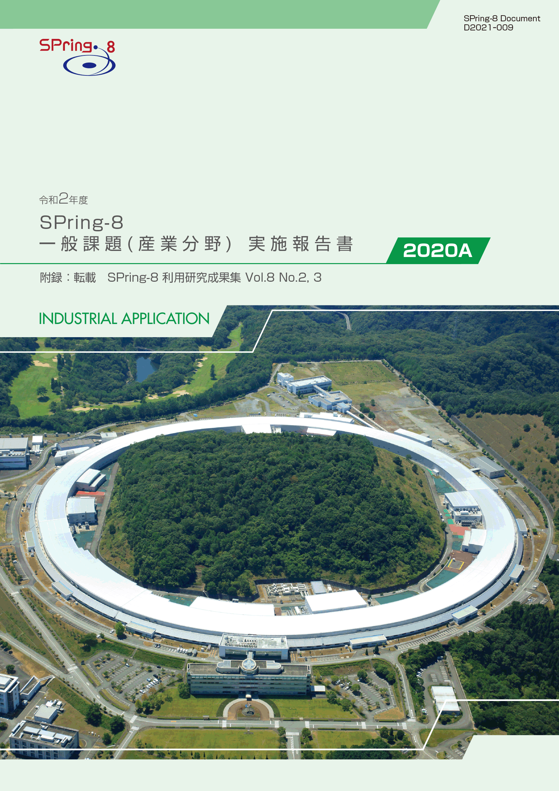
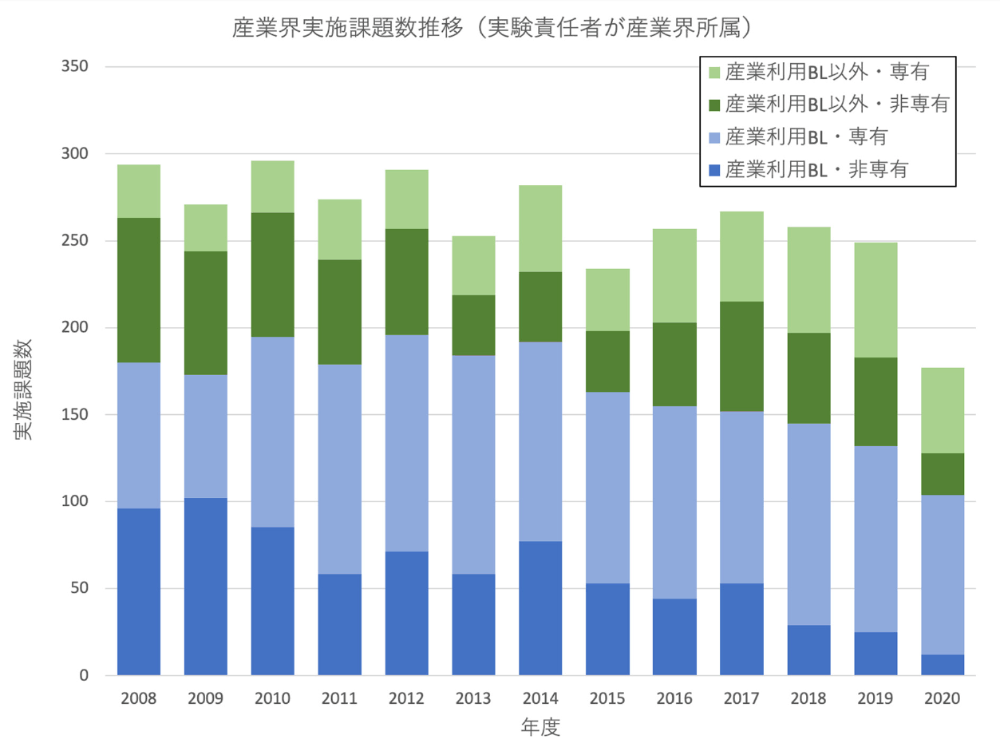

1. はじめに2. 課題募集制度の概要
3. 成果公開の考え方
4. 実施状況
5. 産業利用分野の利用動向
6. 報告書
* 送付を希望される方は、連絡先（氏名、所属、〒住所、E-mail）をご記入の上、 事務局 support@spring8.or.jp までE-mailでご連絡ください。
2020年度は新型コロナウィルス感染症対策のため、2020年4月12日～6月15日の期間SPring-8の利用が停止された（新型コロナウィルス感染症関連課題、測定代行、産業利用準備課題等の来所の必要のない利用を除く）。そのため、この停止期間に実施予定であった課題および新型コロナウィルス感染症の影響でキャンセルされた課題に対する対策として、2020年度下期（2020年10月～）に予定されていた2020B期の課題募集は行わず、これらの課題を利用再開日から2020年度上期末（～2020年7月26日）までのユーザーが配分されていないマシンタイムと2020年度下期に延期して再配分する措置が取られた。この延期課題再配分後の2020年度下期の残りのマシンタイムは、2020A期の追加課題として課題募集が行われた。年6回募集を行なっている産業利用ビームラインのBL14B2、BL19B2、BL46XUについては2020年度上期にあたる2020A期の第１～3期は通常通り募集が行われたが、2020年度下期については上記の延期課題再配分措置のため、2020年10月～11月中旬の期間の募集は行わず、2020年11月中旬～ 12月の期間と2021年1月～2月の期間をそれぞれ2020A期の第4、第5期として募集を行なった。この2020A期で募集した課題種は一般課題（産業利用分野）である。本報告書は、これらの課題で実施された産業利用分野における課題実施状況の報告を目的として、SPring-8利用研究成果集としての審査を行わなかった課題の報告書を収録したものである。
- 一般課題（産業利用分野）
一般課題（産業利用分野）の課題とは、課題申請の際に産業利用分野（I）での課題審査を希望した成果非専有の一般課題（課題審査は課題審査委員会産業利用分科会が行う）である。なお、実験責任者もしくは共同実験者に民間企業もしくは、それに準じる機関に所属する者が含まれていることを申請要件としている。民間企業に準ずる機関とは、民間企業からの委託による試験・研究・開発を事業に含んでいる機関と定義している。また、地方自治体が設置している公設試験場や地方独立行政法人等（○○県工業技術センター）は、民間企業に準ずる機関から除外している。産業利用ビームライン以外での実施を希望する一般課題（産業利用分野）は他分野の一般課題と同様に課題募集は年2回であるが、3本の産業利用ビームラインにおいては年6回（半期3回）の募集を行う。一般課題（産業利用分野）に特徴的な制度は以下の6項目である。
- 産業利用ビームラインI（BL19B2）、II（BL14B2）、III（BL46XU）は半期ごとに3回(1期、2期、3期)の課題募集を行う（年6回課題募集を実施）。これらのビームラインでは成果非専有の一般課題は、審査希望分野が産業利用分野である一般課題（産業利用分野）のみ申請を受付けている（これらのビームラインを指定した申請であるものの、審査希望分野が他分野の課題は申請者の希望にかかわらず産業利用分野で審査する）。*注）
- 新規利用拡大の観点から課題審査において利用経験を考慮する。。
- 民間企業利用拡大の観点から課題審査において所属機関を考慮する。
- 課題実施後約2～4か月以内に所定の書式の産業利用課題実施報告書を提出する。なお、この報告書はSPring-8利用研究成果集として審査を受けることも可能である。
- 全採択課題に担当コーディネーターを配置する。
- 科学技術的妥当性に関する審査は
(1)産業基盤技術としての重要性および発展性
(2)社会的意義および社会経済への寄与度の観点を重視して実施する
に重点をおいて実施する。
*注）産業利用ビームライン3本でも大学院生提案型課題は受付けている。一般課題（産業利用分野）と同様の審査が行われる。
成果の公開については、他の成果非専有の一般課題と同様に学術誌上への論文掲載（博士論文も含む）もしくはSPring-8利用研究成果集への採録による成果公開が求められる。この産業利用課題実施報告書の提出は成果の公開とは認定されないが、これらの報告書は著者からの申し出により課題ごとにSPring-8利用研究成果集としての審査を受けることが可能である。SPring-8利用研究成果集としての審査を受けない実施報告書は、JASRIコーディネーター等による校閲を経て課題実施期が終了して約6か月後に出版･公開されるが、それ以外はSPring-8利用研究成果集としての掲載をもって公開とする。なお、利用研究成果集は、複数課題で1報も認めているが、継続した研究であっても一般課題（産業利用分野）では1課題あたり1報を原則としている（例外：研究内容に継続性がある成果公開優先利用課題との統合）
以下に令和2年度2020A期の一般課題（産業利用分野）の応募・採択結果を表1にまとめる。
- 応募・採択結果 一般課題（産業利用分野）
表 1．応募時期及び研究機関別一般課題応募・採択結果
＊ 「追加募集」で示されている数値は産業利用BL以外で募集された2020A追加募集課題（2020年7月16日締め切り）の結果である。応募数と採択数には、一般課題と同時に審査される大学院生提案型課題（応募数 A1期 2課題、A2期 6課題、A3期 0課題、追加 1課題、A4期 10課題、A5期 5課題 ／ 採択数 A1期 2課題、A2期 3課題、A3期 0課題、追加 0課題、A4期 3課題、A5期 2課題）を除く。12条課題として扱われるJASRI職員が実験責任者の一般課題（応募数 A1期 4課題、A2期2課題、A3期 1課題、追加 0課題、A4期 1課題、A5期 1課題 ／ 採択数 A1期 4課題、A2期2課題、A3期 0課題、追加 0課題、A4期 0課題、A5期 1課題）を含む。募集時期 機関分類 応募数＊採択数採択率（%）第1期募集学官292793.1産業界151173.3合計443886.4第2期募集学官141392.9産業界22100.0合計161593.8第3期募集学官11872.7産業界100.0合計12866.7追加募集
(産業利用BL以外)学官4125.0産業界6350.0合計10440.0第4期募集学官241250.0産業界5240.0合計291448.3第5期募集学官241979.2産業界5120.0合計292069.0総計1409970.7
今年度は新型コロナウィルス感染症の影響により、変則的な課題募集となったため、課題実施状況の前年度との単純な比較は難しいが、まず通年の応募課題数を比較すると2019年度の216課題に対し、140課題と大きく減少している。これは応募機会の減少の影響だけでなく、感染症対策による出張の自粛の影響が大きいと思われる。しかしながら採択率を比較してみると2019年度の75.0％に対し2020年度は70.7％と若干減少しているがほぼ同じレベルを維持している。これはSPring-8の利用停止およびその影響を受けた課題の延期措置を行いながらもスケジュールの調整を行いながら変則的な募集（追加募集、2020A第4、第5期募集）を行うことによってマシンタイムを有効に供給することができた結果と考えられる。なお、全体の課題申請に対する産業界からの課題数比率は応募課題数については前年度とほぼ同程度（約25%）であったが、採択数については2019年度が24.3%であったのに対し2020年度は19.2%と若干減少した。
- SPring-8利用研究成果集としての審査
前記のとおり2011B期より成果公開の扱いが変更になったため、実験責任者の希望に応じて重点産業利用報告書をSPring-8利用研究成果集（現在はSPring-8/SACLA利用研究成果集）として査読審査を受けて公開文書として扱うことも可能とした。放射光施設横断産業利用課題及び産業利用分野の一般課題も同様で、SPring-8/SACLA利用研究成果集として審査を受ける公開文書とすることができる。SPring-8/SACLA利用研究成果集への公開は査読審査が終了し成果審査委員会での承認後となるため、SPring-8/SACLA利用研究成果集に投稿予定の課題は採録していない。このため、今回は2020A期の採録対象課題 86課題のうち、84課題を掲載する。また大学院生提案型課題は本来採録対象外であるが、3課題について本実施報告書に掲載を希望して投稿があったため、これらについても掲載する。
-
図1は産業利用ビームラインが現在の3本体制になった2008A期以降の産業界ユーザーの実施課題の推移である。今年度は上述の通り2020B期の募集がなかったため、比較しやすいように年度毎の推移として示している。この図1が示すように、2020年度は新型コロナウィルス感染症対策のためのSPring-8利用停止により供給マシンタイムが減ったため、実施課題数は大きく減っている。近年認められる産業界が成果専有課題を利用する傾向は相変わらず強く、その成果専有課題の利用比率は特に産業利用BLでは2018B期以降8割以上であり、産業利用ビームライン以外でも半分以上となっている。特に今年度はその傾向が強く、非専有利用は前年度に対し産業利用ビームライン、それ以外のビームライン共に大きく減っているが、専有利用については共に前年度のレベルを保っている。なお、2019A期から開始した、産業利用ビームラインで実施する時期指定成果専有課題に属する産業利用準備課題*は、5課題の実施があった。また産業利用ビームライン以外の共用ビームラインにおいて、2019A期より募集を開始した課題種「先進技術活用による産業応用課題」における産業界の課題実施数は、7課題であった。

図1. 共同利用実験として実施された産業界課題の実施数推移
本格的な課題申請に先立って、測定の可否や測定条件検討を目的とした課題。測定代行と同様、随時受付、来所不要であるが、2時間を上限にBL14B2、BL19B2、BL46XUで実施可能であれば、利用技術を限定せず（例えば、測定代行を実施していない多軸回折装置を用いた歪測定など）に受付ける。
附録 “SPring-8/SACLA利用研究成果集 Section B”より転載
発 行 日： 2021年8月25日
編集・発行： 公益財団法人 高輝度光科学研究センター
「令和2年度 SPring-8 一般課題(産業分野)実施報告書 (2020A)」送付を希望される方は、 連絡先（氏名,所属,〒住所,E-mail）をご記入の上、事務局 support@spring8.or.jp までE-mailでご連絡ください。